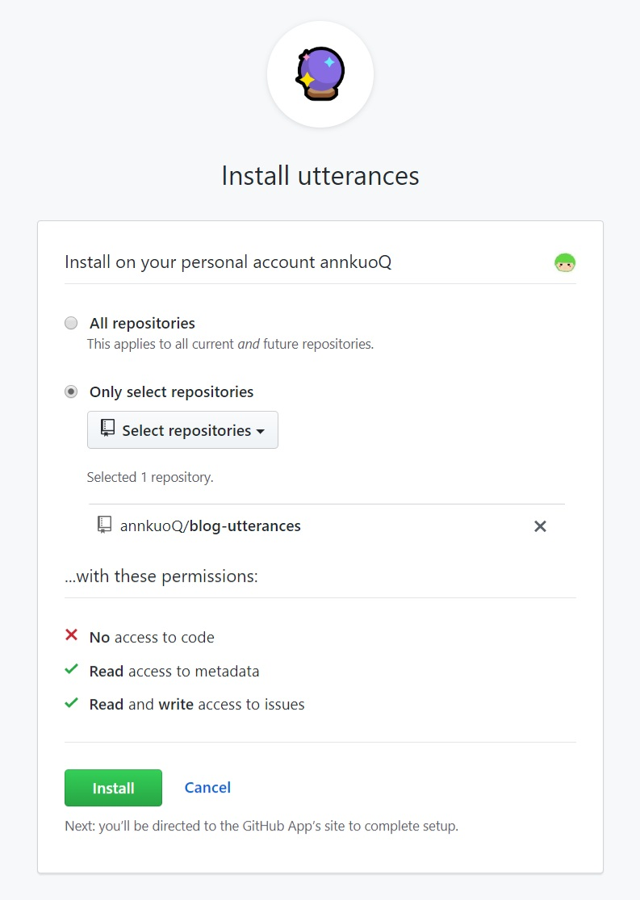
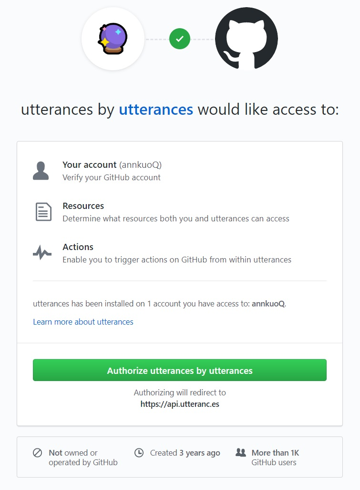
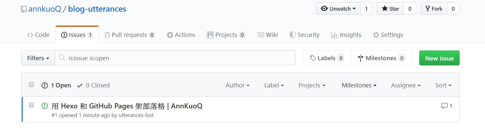

為什麼要用 utterances？
- 因為沒有廣告
- 因為不會追蹤用戶隱私
- 因為不用再申請一個帳號 (部落格本來就架在 GitHub 上)
安裝步驟
- 在 GitHub 創建一個 Public Repository
- 安裝 utterances app >
Only select repositories> 選剛剛創建的 repo >Install
utterances APP 要求存取的權限有:
- No access to code
- Read access to metadata
- Read and write access to issues

- 輸入
owner/repo，就是要放留言的倉庫 - 設定 issue 標題怎麼開，有以下幾種選擇:
- Issue title contains page pathname
- Issue title contains page URL
- Issue title contains page title
- Issue title contains page og:title
- Specific issue number
- Issue title contains specific term
- 選擇主題樣式，有以下幾種選擇:
- GitHub Light
- GitHub Dark
- GitHub Dark Orange
- Icy Dark
- Dark Blue
- Photon Dark
- 複製自動產生的程式碼到
\themes\你的主題名稱\layout\_partia\article.ejs
|
|
測試留言
- 點擊留言版的
Sign in to comment - 同意授權 >
Authorize utterances by utterances

- 回到留言板留言後，repo 就會自動開好票囉
